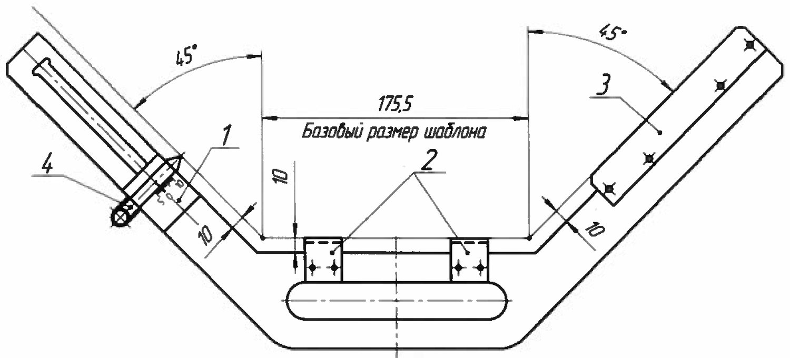
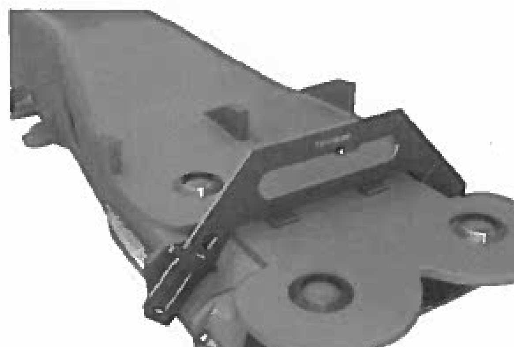
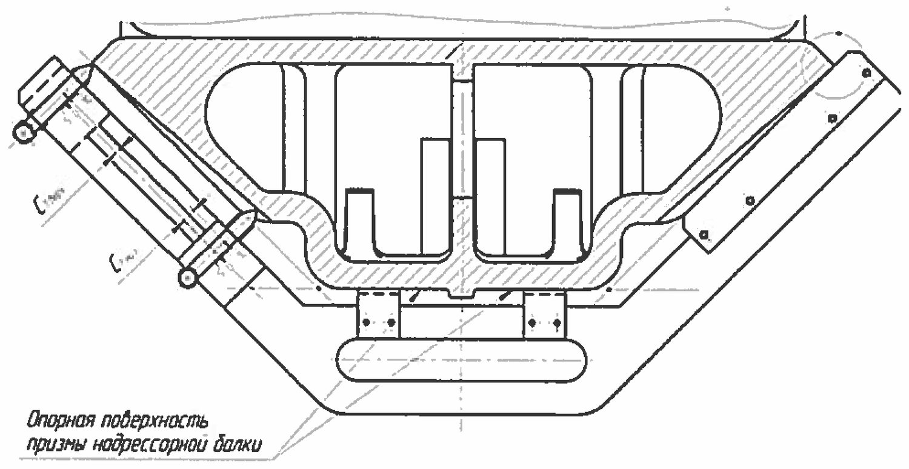

Nadressor balkasi: prizma qiya yuzalari burchagini nazorat qilish
Shablon НП bilan 45° burchak dopuskini aniqlash: K₁ va K₂, ishoralar qoidasi, o'lchash zonalari.
Nima nazorat qilinadi va nima uchun
Nadressor balkasining ikki uchida prizmalar bor — ularning qiya yuzalari 45° ostida. Friksion ponalar aynan shu yuzalarda sirpanadi. Ekspluatatsiyada bu yuzalar tekis emas, notekis yeyiladi: pastki qismi ko'proq, yuqorisi kamroq. Natijada 45° burchak buziladi.
Burchak buzilganini bevosita graduslarda o'lchash qiyin. Shuning uchun metodika oddiy yechim beradi: burchak dopuski ponaning yuqorisi va pastida shablon ko'rsatkichlari farqi sifatida aniqlanadi.

Shablon НП tuzilishi
| Poz. | Element | Vazifasi |
|---|---|---|
| 1 | Polzunok | Qiya yo'naltiruvchi bo'ylab yuqori va quyi chekka holatlar orasida siljiydi |
| 2 | Oyoqchalar | Shablon ular bilan prizmaning tayanch yuzasiga o'rnatiladi |
| 3 | Nakladka | Shablonni balkaning qiya yuzasiga zich bosib turadi |
| 4 | Dvijok | Shkalali siljitkich — qiya yuzagacha chetlanishni ko'rsatadi |
| — | Bazaviy o'lcham | 175,5 mm — barcha hisoblar shu qiymatdan boshlanadi |
O'lchash zonasi — 15…30 mm qoidasi
O'lchash ikkita kesimda, qiya yuzalarning yo'naltiruvchi burtlari chetidan 15…30 mm masofada bajariladi. Nima uchun aynan shunday? Burtga juda yaqin joyda quyma radiusi bor — u yerda yuza tekis emas, natija yolg'on chiqadi. Juda uzoqda esa eng ko'p yeyilgan zona qolib ketadi.

O'lchash tartibi
- Shablonni oyoqchalari (poz. 2) bilan prizmaning tayanch yuzasiga o'rnating.
- Nakladka (poz. 3) bilan balkaning qiya yuzasiga zich bosing — orada tirqish qolmasin.
- Polzunokni (poz. 1) eng quyi holatga tushiring.
- Dvijokni (poz. 4) qiya yuzaga tekkuncha suring, ko'rsatkichni yozing — C₁past.
- Polzunokni eng yuqori holatga ko'taring, dvijokni yana suring — C₁yuqori.
- K₁ = |C₁past − C₁yuqori| ni hisoblang.
- Shu tartibni ikkinchi qiya yuzada takrorlang — C₂past, C₂yuqori, K₂.

Ishoralar qoidasi — eng ko'p xato qilinadigan joy
Ishorani chalkashtirish keyingi darsdagi «З» hisobida to'g'ridan-to'g'ri xatoga olib keladi.
Hisoblash namunasi
C₁past = −4 mm, C₁yuqori = −2 mm bo'lsin.
Me'yorlar
| Parametr | Ruxsat etilgan qiymat |
|---|---|
| K₁ va K₂ — har bir tomon uchun | 3 mm dan kichik |
| 45° burchak dopuski — pastdagi umumiy tirqish | 6,0 mm dan ko'p emas |
Tipik xatolar
- Nakladkani qiya yuzaga zich bosmaslik — dopusk aslida borligidan kichik chiqadi.
- Oyoqchalar ostida qirindi yoki bo'yoq qolishi — butun o'lchash bazasi siljiydi.
- Burt chetidan 15 mm dan yaqinroqda o'lchash.
- Faqat bitta tomonni o'lchash — metodika ikkala qiya yuzada, har birida ikkita kesimda talab qiladi.
Nazorat savollari
Avval o'zingiz javob bering, so'ngra tekshiring.
1. K₁ qanday aniqlanadi?
2. O'lchash burt chetidan qancha masofada bajariladi va nechta kesimda?
3. Dvijok «0» dan o'ngda turibdi. Qanday ishora qo'yiladi?
4. C₂past = −5 mm, C₂yuqori = −1 mm. K₂ nechchi va shart bajarildimi?
5. Shablon НП ning bazaviy o'lchami qancha?
Manba: РД 32 ЦВ 050-2020 — ГОСТ 9246-2013 bo'yicha tip 2 yuk vagon aravachalarini ta'mirlashda uzel va detallar parametrlarini o'lchash metodikasi.
Andijon vagon deposi · telejka ta'mirlash sexi.